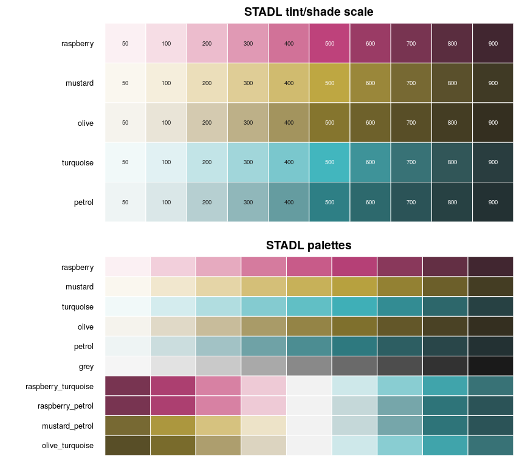

stadlColorPaletteR provides a complete color palette based on the five STADL brand colors, ready to use with ggplot2 and plotly:
50 to 900, 500 = brand color) for every base color,scale_colour_stadl(), scale_fill_stadl()) and plotly colorscales (stadl_colorscale()).You can install the development version of stadlColorPaletteR from GitHub with:
# install.packages("devtools")
devtools::install_github("thgsponer/stadlColorPaletteR")Full documentation website on: https://thgsponer.github.io/stadlColorPaletteR
library(stadlColorPaletteR)
stadl_colors()
#> raspberry mustard olive turquoise petrol
#> "#BE427B" "#BEA742" "#85752E" "#42B6BE" "#2E7F85"
stadl_colors("raspberry", c(100, 700))
#> raspberry_100 raspberry_700
#> "#F6DDE5" "#783451"
stadl_palette_names()
#> [1] "raspberry" "mustard" "turquoise"
#> [4] "olive" "petrol" "grey"
#> [7] "raspberry_turquoise" "raspberry_petrol" "mustard_petrol"
#> [10] "olive_turquoise"
stadl_pal("turquoise", n = 5)
#> [1] "#F1F9F9" "#B1DDE0" "#61BFC5" "#338C93" "#274143"
library(ggplot2)
# categorical data
ggplot(iris, aes(Sepal.Width, Sepal.Length, colour = Species)) +
geom_point(size = 2) +
scale_colour_stadl("turquoise", discrete = TRUE)
# continuous data, sequential palette
ggplot(faithfuld, aes(waiting, eruptions, fill = density)) +
geom_raster() +
scale_fill_stadl("raspberry")
# data around a center, diverging palette (neutral color at midpoint)
ggplot(df, aes(x, y, fill = change)) +
geom_tile() +
scale_fill_stadl("raspberry_turquoise", midpoint = 0)
# the brand colors as manual values
ggplot(mpg, aes(class, fill = drv)) +
geom_bar() +
scale_fill_manual(values = unname(stadl_colors(c("raspberry", "mustard", "petrol"))))
library(plotly)
# discrete colors
plot_ly(iris, x = ~Sepal.Width, y = ~Sepal.Length, color = ~Species,
colors = stadl_colors(), type = "scatter", mode = "markers")
# continuous color mapping
plot_ly(iris, x = ~Sepal.Width, y = ~Sepal.Length, color = ~Petal.Length,
colors = stadl_pal("turquoise"), type = "scatter", mode = "markers")
# traces with a colorscale (heatmap, contour, surface, ...)
plot_ly(z = volcano, type = "heatmap",
colorscale = stadl_colorscale("raspberry"))